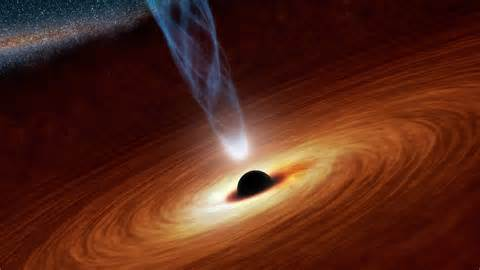

Teoría del Agujero Negro

Teoría del Agujero Negro
En pocas palabras, agujero negro es una región del espacio que tiene una cantidad tan grande de masa concentrada que nada puede escapar de la atracción de la fuerza de gravedad, ni siquiera la luz, por lo que se les llama "agujeros negros".
Hasta la fecha, la mejor teoría para explicar este tipo de fenómeno es la teoría general de la relatividad formulada por Albert Einstein. Pero para entender mejor lo que es un agujero negro es necesario comprender algunos conceptos.

Representación de la imagen de un Agujero Negro.
De acuerdo con la teoría de Einstein, la fuerza de la gravedad sería una manifestación de la distorsión en el espacio-tiempo causada por la masa de cuerpos celestes como planetas o estrellas. Esta deformación sería más o menos de acuerdo a la masa o la densidad del cuerpo. Por lo tanto, la mayor masa corporal, mayor es la desviación y, a su vez, mayor es la fuerza de la gravedad que tiene. En consecuencia, cuanto mayor sea la velocidad de escape, fuerza mínima se debe utilizar de manera que un objeto de superar la gravedad de este cuerpo. Por ejemplo, para un cohete dejar la atmósfera de la Tierra hacia el espacio que necesita una resistencia de escape de 40.320 kmh. En Júpiter, esta fuerza tendría que ser 214,200 kmh. Esta diferencia muy grande, es porque su masa es mucho mayor que la de la Tierra.
Eso es lo que ocurre en los agujeros negros. Hay una gran concentración de masa en un punto infinitamente pequeño a fin de que la densidad es suficiente para provocar tal deformación en el espacio-tiempo que la velocidad de escape en esta ubicación es mayor que la de la luz. De manera que ni siquiera la luz puede escapar de un agujero negro. Y puesto que nada puede moverse más rápido que la velocidad de la luz, nada puede escapar de un agujero negro.
Estos tales agujeros negros serían estrellas en su última etapa de la evolución cuando, después de haber consumido todo su combustible, la estrella con masa superior a 3 masas solares, se convierten en una supernova con un "bulto" en el centro. Si la masa del núcleo, que puede o no puede formar, es mayor que 2 masas solares cae sobre sí mismo, convirtiéndose en un agujero negro.

Agujero Negro en el centro de un Galaxie.
A veces sucede, una estrella evolucionar en lo que llamamos "binario cerrado" cuando dos estrellas están muy cerca y no hay transferencia de la materia de uno a otro y pueden causar una de ellos para acumular el exceso de material, causando su explosión de una supernova. En estos casos, lo más probable es que va a convertirse en una estrella de neutrones, protones y electrones cuando se funden en neutrones. Pero sucede que en algunos sistemas de la concentración en masa es muy grande y se produce la formación de un agujero negro que sigue "chupar" la masa de esa otra estrella más grande.
Traducida a partir de estas fuentes:
Fuente1
Fuente2
Copyright BEYTUDODEBOM.COM 2016